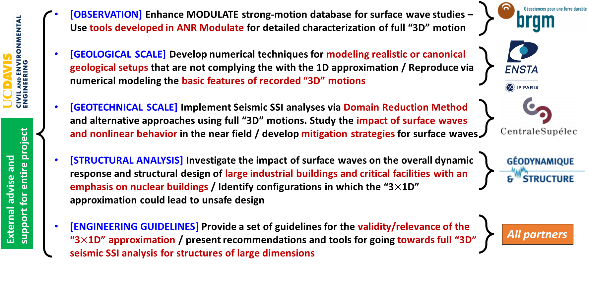

The IM-SURF project is focused on the impact and mitigation of seismic surface waves on large 3D structures. It aims to improve the resilience of infrastructures exposed to ground motion through innovative design, monitoring, and simulation techniques.
The project brings together three public institutions (BRGM, CentraleSupélec, ENSTA), a commercial partner (GDS), and an international institution (UC-Davis)
The proposed project is divided into 5 Work Packages (WP). Each WP contains tasks with detailed actions, milestones and deliverables.
Each WP has a partner as responsible Leader, who coordinates the tasks of the WP.
The following figure presents the global flowchart of IM-SURF project with the role of each partner of the research consortium.
Read our latest scientific outputs, including peer-reviewed papers and conference presentations.
Different strategies are pursued in order to ensure a rapid transfer of the results, in particular to public authorities and to the scientific and engineering communities. Specifically:
Stage GDS: ISS modeling for large civil engineering structures.
By: Tanguy Ramanantsoavina
Stay updated with the latest IMSURF project news and upcoming scientific events or workshops.
The project IMSURF was presented during the kick-off metting of ANR projects approved in 2024 by the ANR Evaluation Comitee CE22 "Ville, bâtiments et construction, transport et mobilité : transition vers la durabilité".
During the meeting, IMSURF was presented as one of the 20 projects selected for funding, out of 74 proposals.
For more information about the IMSURF project, please contact us at:
Email: charisis.chatzigogos@geodynamique.com
Project Coordinator: Dr. Charisis Chatzigogos
Company: Géodynamique et Structures